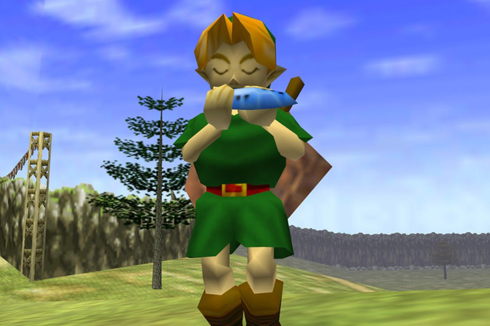
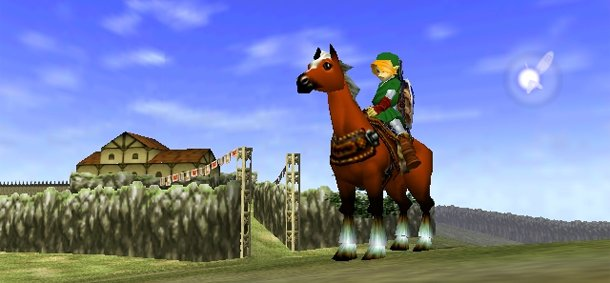
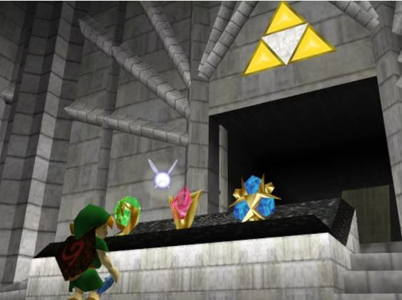
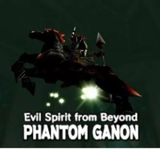

Central to the game's mechanics, the ocarina is a magical instrument that Link plays to affect time and the environment. Each song has a specific effect, such as changing the time of day, summoning rain, or teleporting.

Epona is a majestic horse that Link can summon and ride. She plays a crucial role in the game, offering faster travel across Hyrule and enhancing Link’s ability to navigate the vast world.

Temples are key locations where players face puzzles, enemies, and bosses to advance the story. Each temple has its own unique theme, challenges, and dungeon items that help Link on his quest.

Each boss in Ocarina of Time is designed to challenge different aspects of the player’s skills, from puzzle-solving to combat tactics. They not only serve as key obstacles in the game but also contribute to the rich storytelling and immersive experience of Hyrule.